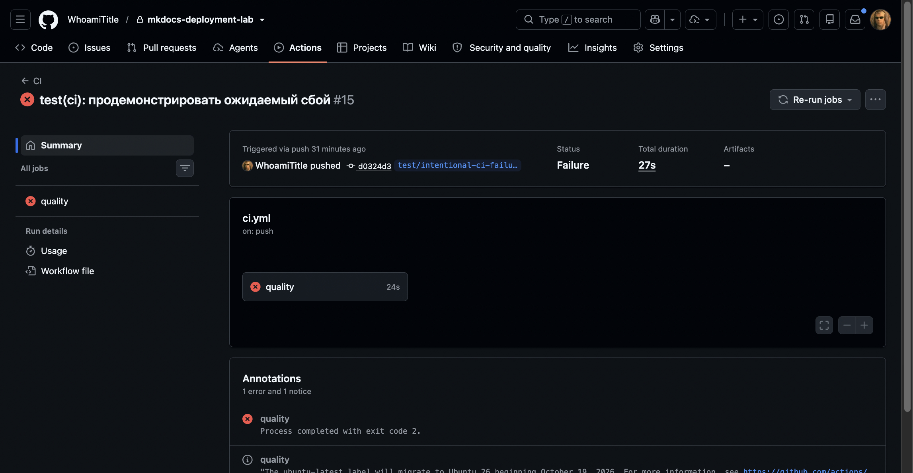

Отладка¶
В этот раздел заносятся только фактически возникшие ошибки. Для каждой ошибки сохраняется очищенный от секретов фрагмент журнала.
Шаблон записи¶
Ошибка N. Краткое название¶
Текст ошибки:
Гипотеза: предполагаемая причина.
Проверка: команда или эксперимент, которыми проверена гипотеза.
Причина: установленная причина.
Решение: внесённое изменение.
Результат: повторная проверка после исправления.
Ошибка 1. Проверка Ruff остановила pipeline¶
Текст ошибки:
UP017 Use datetime.UTC alias
RUF100 Unused noqa directive
E501 Line too long
Found 7 errors.
make: *** [lint] Error 1
Гипотеза: исходный код не соответствует выбранному набору правил Ruff для Python 3.13.
Проверка: выполнена команда .venv/bin/python -m ruff check src tests,
которая указала точные файлы и строки.
Причина: использовался прежний вариант timezone.utc, оставалась ненужная
директива noqa, а несколько сообщений об ошибках превышали ограничение в 100
символов.
Решение: применён datetime.UTC, удалена лишняя директива, длинные выражения
разбиты на несколько строк.
Результат: повторный ruff check завершился сообщением All checks passed!.
Ошибка 2. Проверка форматирования обнаружила 18 файлов¶
Текст ошибки:
Гипотеза: созданные файлы синтаксически корректны, но ещё не приведены к единому формату Ruff.
Проверка: выполнена команда .venv/bin/python -m ruff format --check src tests.
Причина: первоначальный каркас создавался до первого запуска автоматического форматтера.
Решение: выполнена команда .venv/bin/python -m ruff format src tests.
Результат: повторная проверка сообщила 21 files already formatted.
Ошибка 3. Неверная точка входа codespell¶
Текст ошибки:
Гипотеза: имя установленного пакета и имя Python-модуля для запуска не совпадают.
Проверка: команды .venv/bin/codespell --version и
.venv/bin/python -m codespell_lib --version вернули одну версию 2.4.3.
Причина: в Makefile использовалась несуществующая точка входа
python -m codespell.
Решение: команда заменена на переносимый вызов
python -m codespell_lib.
Результат: codespell успешно прошёл в составе полного make check.
Ошибка 4. Смешение типов инфраструктурных адаптеров¶
Текст ошибки:
Incompatible types in assignment
expression has type "SshRsyncReleaseGateway"
variable has type "LocalReleaseGateway"
Гипотеза: mypy вывел тип локальной переменной по её первому присваиванию и не разрешил использовать то же имя для SSH-адаптера.
Проверка: сообщение указывало на второе присваивание gateway в функции
диспетчеризации CLI.
Причина: локальный и удалённый адаптеры имели одно имя переменной в общей области видимости.
Решение: введены отдельные имена local_gateway и ssh_gateway.
Результат: mypy проверил 23 исходных файла без ошибок.
Ошибка 5. configure-pages не получил доступ к Pages API¶
Текст ошибки:
Гипотеза: Pages не включён либо токен job не имеет разрешения читать конфигурацию Pages.
Проверка: в настройках репозитория источником публикации был выбран GitHub
Actions. Проверка .github/workflows/publish.yml показала, что job
build-pages наследовал только contents: read. Для приватного репозитория
запрос GET /repos/{owner}/{repo}/pages также требует pages: read.
Причина: actions/configure-pages обращался к Pages API через
GITHUB_TOKEN, которому в job build-pages не было выдано разрешение
pages: read.
Решение: для build-pages явно добавлены минимальные разрешения
contents: read и pages: read. Параметр enablement не применялся, потому
что он требует токен, отличный от стандартного GITHUB_TOKEN.
Результат: повторный workflow опубликовал коммит 0c3ae30 по адресу
https://whoamititle.github.io/mkdocs-deployment-lab/. Удалённая проверка
подтвердила 17 страниц, отсутствие битых навигационных ссылок и внешних
runtime-ресурсов, доступность поискового индекса и локальных ресурсов KaTeX.
Ошибка 6. Намеренная проверка остановки CI¶
Текст ошибки:
python -m codespell_lib README.md config docs scripts src tests
docs/intentional-ci-failure.md:3: teh ==> the
make: *** [Makefile:19: lint] Error 65
Error: Process completed with exit code 2.
Гипотеза: опечатка в проверяемом документе должна остановить quality job и
не позволить загрузить site-build artifact.
Проверка: на временной ветке test/intentional-ci-failure создан commit
d0324d3, содержащий только контролируемую опечатку и запрет preview-deploy для
этой ветки. Запущены CI run
36943920803
и Publish run 36943920823.
Причина: codespell правильно распознал teh как ошибочное написание
the и вернул ненулевой код.
Решение: после получения очищенного журнала временная ветка удалена. В
main ошибочный файл и специальное условие не переносились.
Результат: CI завершился ожидаемым статусом failure, шаг загрузки
артефакта был пропущен, а весь Publish workflow для тестовой ветки получил
статус skipped. Ни preview, ни production не изменились. Автоматическая
очистка ветки завершилась успешно и удалила ноль preview-релизов.

Контрольный результат¶
После исправлений контрольный запуск 3 октября 2026 года завершился успешно:
All checks passed!
55 files already formatted
Success: no issues found in 55 source files
90 passed
Total coverage: 82.46%
Documentation built
scanned_html_files: 20
scanned_css_files: 4
external_assets: 0
Успешный Publish run 36943230708 отдельно подтвердил jobs build-pages,
deploy-pages и deploy-helios-production. Его квитанция и снимок приведены в
разделе «Подтверждающие материалы».